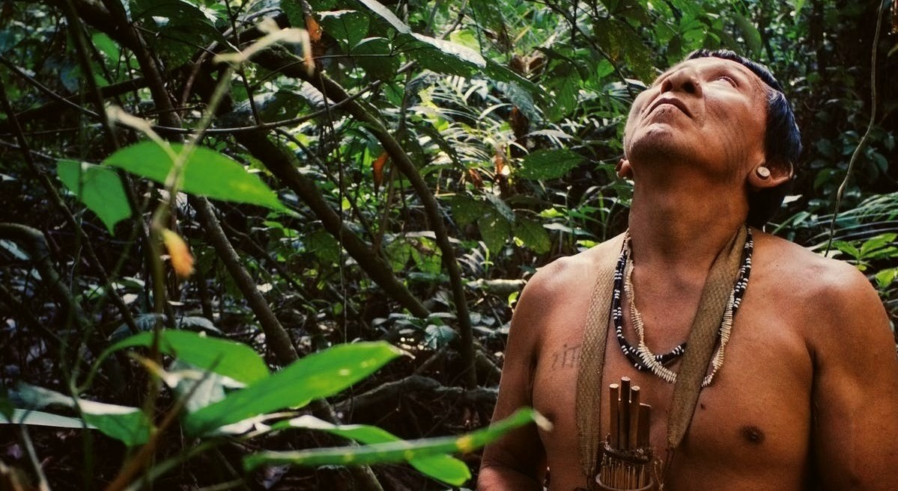

O sistema antifraude de DOF (Documento de Origem Florestal) foi criado com o objetivo de evitar possíveis fraudes do registro. Recentemente, as denúncias de fraudes no sistema DOF vêm aumentando de forma expressiva. Não somente, os índices recordes de desmatamento e destruição ilegal dos recursos naturais, vivenciados nos últimos anos, podem facilitar a adulteração das informações contidas no documento.
Desta forma, o Madeira Legal sistema antifraude de DOF foi pensado para restringir e evitar o acesso ao documento por pessoas não autorizadas. A partir de uma chave de criptografia, dispostas somente por profissionais com altos cargos de responsabilidade, o código de inscrição do DOF é criptografado. Isto posto, o novo código (criptografado) corresponde a chave de acesso ao documento na íntegra. Na sequência, o inventário do conteúdo registrado deve ser verificado e qualquer indicador de fraude dever IMEDIATAMENTE comunicado ao IBAMA.
O Madeira Legal suporta códigos DOF compostos por letras maiúsculas e minúsculas. Caracteres especiais e números são suportados, entretanto não sofrerão alterações com o processo de criptografia. Além disso, chaves de deslocamento negativas também são aceitas.
O código DOF pode possuir de 10 à 25 caracteres e as chaves de criptografia estão entre -99999 e +99999. O Madeira Legal também permite a descriptografia do código DOF sobre as mesmas condições mencionadas.
Certifique-se de que o acesso aos serviços do Madeira Legal são em sua totalidade registrados e poderão ser acessados futuramente para cabíveis investigações legais.
